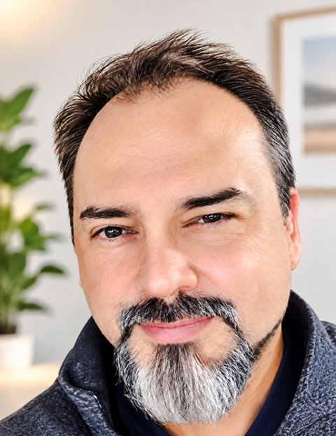
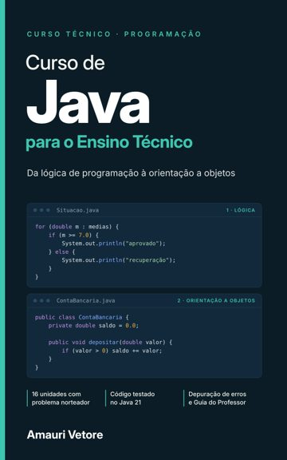
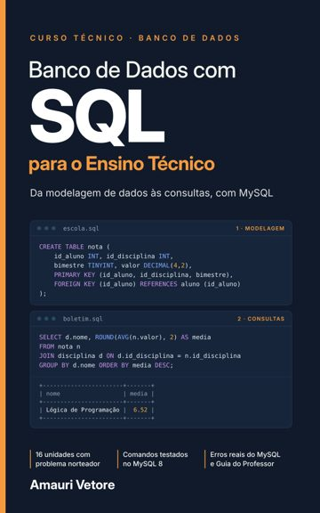

Sistema de biblioteca para a sala de leitura
Projeto orientado com uma turma do curso técnico para organizar o acervo e os empréstimos da sala de leitura da escola.
Coordeno e leciono no Curso Técnico em Desenvolvimento de Sistemas da rede estadual de São Paulo. Antes da sala de aula, foram 15 anos de TI na indústria. Hoje escrevo livros que ensinam programação a partir do erro real.

Governo do Estado de São Paulo, desde janeiro de 2025. Levo para a sala de aula a experiência da indústria, com aulas práticas e projetos que resolvem problemas da própria escola.
Coordenação pedagógica e docência no Curso Técnico em Desenvolvimento de Sistemas. Em 2025, também avaliador externo de bancas de TCC de Ciência da Computação.
Aulas teóricas e práticas de programação e desenvolvimento web, em unidades próprias e escolas parceiras de ensino médio.
Graduação e pós-graduação: algoritmos e lógica de programação, orientação de projetos e avaliação dos Projetos Integrados de Análise de Sistemas e Gestão de TI.
11 anos dando suporte a sistemas críticos de fábrica: sequenciamento da linha de produção, Nota Fiscal Eletrônica e portal de qualidade. Participação na integração das linhas de produção 4.0 e treinamento do time de 1º nível, experiência que despertou o interesse pela docência.
Redes, suporte de campo e infraestrutura.
Material didático para cursos técnicos: todo código foi executado de verdade, cada unidade tem a seção Depurando, com a mensagem real do erro e a correção, e cada livro traz um Guia do Professor organizado por bimestre.
 Curso de C++ para o Ensino TécnicoKindle · R$ 19,90
Curso de C++ para o Ensino TécnicoKindle · R$ 19,90

Curso de Java para o Ensino TécnicoKindle · R$ 19,90
Banco de Dados com SQL para o Ensino TécnicoKindle · R$ 19,90 Automação com Python e Inteligência ArtificialKindle · R$ 19,90
Automação com Python e Inteligência ArtificialKindle · R$ 19,90
 Arduino com C++ para o Ensino TécnicoEm breve
Arduino com C++ para o Ensino TécnicoEm breveTambém em inglês na Amazon.com: Python Course e Automation with Python and AI. Amostra grátis e detalhes em vetore.github.io.
Projeto orientado com uma turma do curso técnico para organizar o acervo e os empréstimos da sala de leitura da escola.
Solução que identifica patógenos na água e em alimentos e monitora parâmetros de qualidade da água.
Sistema para professores: turmas, notas, frequência, prazos, visitas técnicas e relatórios em PDF, funcionando 100% offline.
Aplicativo de agendamento de tarefas para diretores e professores, com apoio de inteligência artificial.
Assistente de IA que roda no próprio computador, com um conselho de agentes especializados que debatem antes de responder.
Interface web privada para modelos de linguagem rodando localmente, com respostas em tempo real.
Para parcerias com escolas, palestras, formação de professores ou adoção dos livros em turmas, fale comigo pelo LinkedIn.